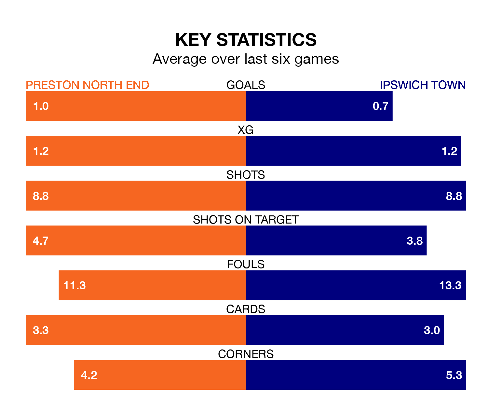

Ipswich Town are strong favourites to take all three points despite Preston North End's home advantage in Saturday's match at Deepdale.
*Betting Company* are offering odds of 1.96 on Ipswich sealing the win, with the visitors sitting second in EFL Championship table.
Preston, who are 12th in the league and 20 points behind the Blues, are priced at 3.4 to win. A draw is set at 3.35.
With 51 goals in 28 games so far this season, Ipswich are the league's joint-third-highest scorers with 1.8 goals per game. And they are conceding fewer than average, letting in 35 goals at a rate of 1.2 per game.
Preston, meanwhile, are below average scorers, with 1.2 goals per game, compared to a league average of 1.4. They have conceded 1.6 goals per game.
In the last 10 years, Preston and Ipswich have played each other on 10 occasions. Preston won one of them, Ipswich six, and they drew three times.
On average, the Lilywhites scored 1.1 goals and the Blues 1.6 in those matches.
Their last meeting was on October 7, when Ipswich won 4-2 at home.
In Václav Hladký, Town can rely on one of the league's safest pair of hands. He has kept nine clean sheets in his 28 appearances this season, and only two other 'keepers – West Bromwich Albion's Alex Palmer and Leeds United's Illan Meslier – have been able to prevent the opposition scoring on more occasions in EFL Championship.
In North End's net, Freddie Woodman has four clean sheets in 27 games. He has conceded a goal every 64 minutes, 30% more often than the 81 minutes between goals for Hladký.
The Lilywhites are in mixed form in EFL Championship, with two wins and a draw from their last six games.
With a win and four draws over that period, the Blues' form is similar – they have both taken seven points from 18.
Preston's last match was on January 27, a 1-1 draw against Millwall, with Brad Potts getting the goal for the Lilywhites.
Ipswich drew 1-1 with Leicester City last time out, on January 22.
Updated: 09:21 (UTC), 30/01/24